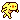

| 2013/05 24 Fri | 430回目*marika |
今日は朝撮影があって
終わってからまいまい、ゆったん、
かなりん、さゆにゃんと
パンケーキ食べました

女子！
アプリで地図検索したのに
全く逆方向行って
私とさゆにゃんだけ迷った笑
大富豪はちょっと
負けただけだもーん
 っけ
っけ
っけ
また大富豪したーい！
......
かなりんブログででしゃばりました。
かなりんかなりんかなりんかなりんかなりんかなりんかなりんかなりん
かなりんのまりちゃ呼びすきー

2枚目の写真暗くてわかりづらいけど
後ろに写ってるのはさゆりんだよ！
**********
 ななみんのブログに
ななみんのブログに
月曜から夜更かしの
桐谷さんの話題が出てたけど
まりかは桐谷さんの事知ってる？＊
桐谷さんの話題が出てたけど
まりかは桐谷さんの事知ってる？＊
 毎週見てる。
毎週見てる。
自転車こいでる桐谷さん眩しい！
元気になる！素晴らしい！！！！！
こないだ夢にまりっかが
でてきたどうしてだろう？
実はおじゃましてました
 最近はまってるアーティストは？？
空想委員会さん、パスピエさん
最近はまってるアーティストは？？
空想委員会さん、パスピエさん
バチバチエレキテル挿入歌が
パスピエさんでうへへへ...
録画して見てるの。まいやんかわいい。
黒ゴマバナナジュース
っておいしいの？
おいしいの！作って飲んでみ。
黒ごまアイスとか黒ごまプリンとか
黒ごま系に反応するの私

**********
シャキイズムのまりおがいたので貼る。
かっこよくないとか言うな

明日朝早いので
おやすみなさい
まりか
コメント(289)
2013/05/24 21:12